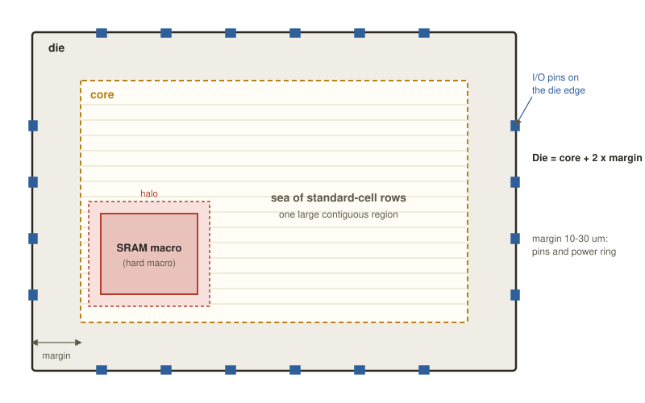
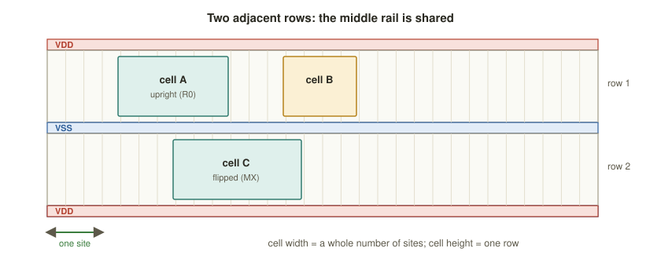
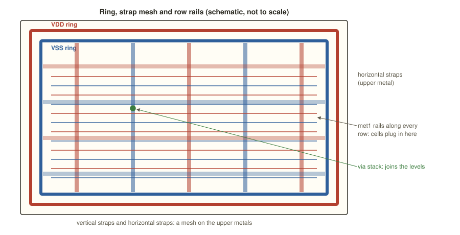

Chapter 3: Floorplanning and Power Planning¶
Synthesis hands the back end a gate-level netlist: a huge, position-less bag of standard cells and macros. Floorplanning is where that netlist first becomes a physical object. We decide how big the die is, what shape it has, where the memories and the input and output pins sit, and how power will reach every cell. These decisions are made before a single cell is placed, and every later stage, placement, clock-tree synthesis, routing and timing, can only optimise inside the box that the floorplan draws. A poor floorplan cannot be rescued by clever placement or routing; it has to be thrown away and redone. That is why this short chapter is worth more care per page than any other in the back end.
Learning outcomes
After this chapter you can:
- List what a floorplan fixes and explain why every later stage is bound by it.
- Tell the die from the core, and explain rows, sites and cell orientation.
- Choose a utilisation and compute core and die size from it.
- Describe the power grid (rings, straps, rails, vias) and why IR drop and electromigration make it matter.
- Place macros with halos, plan pins, and read the main OpenLANE floorplan variables.
3.1 What floorplanning decides¶
Floorplanning is the first physical step of the flow. Before anything is placed, it fixes:
- Size: the total silicon area that you will pay the foundry for, and the usable region inside it.
- Shape: the aspect ratio, height divided by width, of the core. It affects routing and how the block tiles into a larger chip.
- Pins: where signals and power enter and leave the block.
- Macros: where the large fixed blocks go: memories, clock generators, analogue parts. Placement must route around them.
- Power: the distribution network, built before placement so that cells snap onto power.
Why it is the most consequential step
Placement, clock-tree synthesis, routing and timing all optimise within the box that floorplanning draws. A die that is too small, a macro that blocks a critical path or a weak power grid cannot be repaired later without ripping up the floorplan and starting again. Effort spent here pays back at every stage that follows. (Compare planning a building before the furniture arrives: move a stairwell later and everything else moves with it.)
3.2 Die and core, rows and sites¶
Two nested rectangles define the block's geometry (Figure 3.1).

| Term | Meaning |
|---|---|
| Die area | the whole piece of silicon, edge to edge, including any I/O ring or pad frame |
| Core area | the inner region where standard cells and macros are placed and routed |
| Core margin | the gap between the core boundary and the die edge, reserved for pins, the power ring and routing to pins; typically 10 to 30 µm per side |
| Rows | horizontal tracks, each one cell high, that tile the core; adjacent rows are flipped so that they share power and ground rails |
| Sites | the unit grid within a row; a cell's width is a whole number of sites, its height is one row; in the Sky130 unithd library a site is 0.46 µm × 2.72 µm |
| Orientation | each instance has an orientation (R0, MX, MY, R180 and so on); row flipping (MX) lets neighbouring rows abut VDD to VDD and VSS to VSS |
Table 3.1 The vocabulary of floorplan geometry.
Every other row is flipped upside down, so that a rail is shared between two rows: VDD meets VDD and ground meets ground (Figure 3.2). Cells snap onto the site grid, and the placer is free to choose the orientation each row requires.

Hard macros, such as compiled SRAM blocks, are placed first and usually pushed towards the edges or corners of the core so that they do not fragment the sea of standard-cell rows. Pins (in a block flow) or bonding pads (in a padded chip flow) are assigned to the die edges: data pins on the sides, and dedicated power and ground pins feeding the ring.
3.3 Utilisation: how full is the core?¶
Utilisation is the most important single number in a floorplan.
Definition: utilisation
Utilisation = total standard-cell area ÷ core area. At 0.70, cells cover 70 % of the core; the other 30 % is whitespace left for wiring, extra buffers, clock cells and legalisation.
Typical initial targets are 60 to 75 %. The trade-off is fundamental.
| Utilisation | Die size and cost | Routability | Verdict |
|---|---|---|---|
| Low, about 50 % | large, expensive, silicon wasted | easy: plenty of room for wires | wasteful |
| 60 to 75 % | reasonable | congestion manageable | the usual choice |
| Above 85 % | small, cheap | congested, hard to route, timing suffers | risky |
Table 3.2 The utilisation trade-off.
A denser design looks cheaper, until a design that will not route, or that fails timing because there is no room to buffer a long net, costs weeks of extra iterations. Choose a target that leaves room for the clock buffers and repair buffers that later stages will add.
Example 3.1: Sizing a block
A block has 20 000 cells averaging 2 µm². Target utilisation 70 %, a square core, a margin of 20 µm.
- Total cell area \(= 20\,000 \times 2 = 40\,000\) µm².
- Core area \(= 40\,000 / 0.70 \approx 57\,143\) µm².
- A square core has side \(\sqrt{57\,143} \approx 239\) µm.
- The die adds the margin on both sides of each dimension: \(239 + 2 \times 20 \approx 279\) µm.
- Die area \(= 279 \times 279 \approx 77\,800\) µm².
At 80 % utilisation the core shrinks to \(40\,000 / 0.80 = 50\,000\) µm² (side about 224 µm) and the die to about \(264 \times 264 \approx 69\,500\) µm², some 11 % less silicon, but with much less room for wires.
The aspect ratio changes the shape but not the core area. With the aspect ratio \(r\) = height ÷ width and core area \(A\), the width is \(\sqrt{A/r}\) and the height \(\sqrt{A\,r}\).
3.4 Power planning: the distribution network¶
Every cell needs VDD and VSS. Power planning builds a robust metal network, before placement, so that current reaches every corner of the core with as little voltage lost on the way as possible. This is the power distribution network (PDN), and it has four layers of structure (Figure 3.3).

| Element | Layer | Role |
|---|---|---|
| Power rings | wide upper metal around the core edge | two or more concentric rings carry VDD and VSS round the block; everything taps off them |
| Straps (stripes) | thick upper metals (for example met4 and met5) |
wide vertical and horizontal wires crossing the core, forming a mesh that spreads the current evenly |
| Standard-cell rails | met1 |
thin horizontal VDD and VSS rails along every row; cells connect their power pins here |
| Vias and via stacks | between all layers | small metal plugs from one layer to the next that stitch the met1 rails up through the straps to the rings, so that current flows from the rings down into the cells |
Table 3.3 The levels of the power network.
Why the grid must be strong¶
Two physical effects set the requirements.
IR drop is the voltage lost across the resistance of the power metal, \(V = I \times R\). If the grid is too thin, a cell far from the ring sees a sagging supply. In the course's example a cell might see 0.75 V where the supply is 0.80 V, a sag of 0.05 V or 6.25 %. Such a cell switches more slowly, which can break timing, so IR drop must be kept within a budget of a few percent of VDD.
Electromigration (EM) is the gradual erosion of metal under sustained high current density: over years the atoms are pushed along the wire, which thins and finally breaks, and the chip dies in the field.
Both have the same cure: wider straps, more of them, more vias, and thick upper metal for the backbone. A strong grid is a reliability requirement and not a luxury.
3.5 Macros, halos, blockages and pins¶
Several devices keep cells out of places where they would do harm.
- A halo is a guard band drawn around a hard macro in which no standard cells may be placed. It keeps the macro's pins reachable, leaves room to connect its power and reduces congestion at its edges.
- A placement blockage is any region where cells are forbidden (hard blockage) or limited in density (soft or partial blockage). It is used to keep a routing channel open, to reserve space for buffers or to stay clear of sensitive circuits.
- Pin planning places each input or output near the logic that uses it, shortening routes and easing timing. Power pins are spread around the edge so that current enters the ring from several sides.
When a block has several macros, how they are arranged shapes the whole floorplan.
| Style | Description | When to use |
|---|---|---|
| Channel | macros separated by gaps through which wires and buffers pass | flexible and easier to route, at a cost in area |
| Abutted | macros edge to edge with no gap | saves area; needs careful pin alignment and power hook-up |
Table 3.4 Two ways to arrange macros.
The general strategy is to place macros along the boundary, orient their pins towards the standard-cell area, group macros that talk to each other and always leave a halo. The aim is to keep the middle of the core one large, contiguous, routable sea of rows.
3.6 The real knobs: OpenLANE and OpenROAD¶
In the OpenLANE and Sky130 flow, floorplanning is driven by a handful of configuration variables, set in config.tcl (or config.json), and by OpenROAD commands. The most consequential are shown below.
# --- OpenLANE floorplan configuration (config.tcl) ---
set ::env(FP_CORE_UTIL) 45 ;# target core utilisation, % (start low)
set ::env(FP_ASPECT_RATIO) 1 ;# core height / width (1 = square)
set ::env(FP_SIZING) relative ;# 'relative': size the die from utilisation
set ::env(DIE_AREA) "0 0 300 300" ;# used when FP_SIZING is 'absolute' (um)
# --- I/O pins ---
set ::env(FP_IO_MODE) 1 ;# equidistant pins around the die edge
set ::env(FP_IO_HMETAL) met3 ;# layer for pins on horizontal edges
set ::env(FP_IO_VMETAL) met2 ;# layer for pins on vertical edges
# --- macros and halo ---
set ::env(PL_MACRO_HALO) "10 10" ;# keep-out halo round macros, um
# --- power distribution network ---
set ::env(FP_PDN_VPITCH) 50 ;# vertical strap spacing, um
set ::env(FP_PDN_HPITCH) 50 ;# horizontal strap spacing, um
set ::env(FP_PDN_VWIDTH) 1.6 ;# strap width, um: wider means less IR drop
set ::env(FP_PDN_HWIDTH) 1.6
set ::env(FP_PDN_CORE_RING) 1 ;# build a VDD/VSS ring round the core
Under the hood OpenROAD runs the steps directly, which is useful to recognise when reading logs.
# --- what OpenLANE calls in OpenROAD ---
initialize_floorplan -utilization 45 -aspect_ratio 1 -site unithd ;# rows, core and die
place_pins -hor_layers met3 -ver_layers met2 ;# pins on the die edges
pdngen ;# rings + straps + rails
Lowering FP_CORE_UTIL spreads the cells out (easier routing, a bigger die); raising it packs them (a smaller die, more congestion). FP_ASPECT_RATIO reshapes the core. The FP_PDN_* widths and pitches trade the robustness of the PDN (the IR-drop and EM margin) against the routing area that the straps consume. The flow also places well-tap cells in the rows; they appear again in Chapter 8 when electrical rules are checked.
Variable names
The variable names above are those of the classic OpenLANE flow. Names and defaults change between versions of OpenLANE, so check them against the documentation of the version you install (Chapter 9) before relying on them.
3.7 A common misconception¶
Common misconception
"Higher utilisation is always better, because the die is smaller and cheaper." Not so. Above the sweet spot congestion explodes: nets cannot find a legal route, the tool inserts detours and buffers that eat the whitespace you saved, timing degrades, and you burn days on failed routing iterations. A slightly larger die that closes on the first pass is almost always cheaper, in engineering time, than a maximally packed one that will not converge.
Think about it
You set utilisation to 85 % and routing fails with congestion hot spots near the SRAMs. What do you try first, and why?
Answer
Try a bigger halo first. The congestion is local to the macros, not global, so the cheapest cure is local too. If that is not enough, lower utilisation by a few points, add placement blockages to steer cells away from the macro pins, or change the aspect ratio so that the congested dimension has more routing tracks.
Summary¶
- Floorplanning fixes die and core size, shape, pins, macro positions and the power grid; everything later lives inside it.
- Cells sit in rows divided into sites; alternate rows are flipped so that they share rails.
- Utilisation is cell area divided by core area; 60 to 75 % balances cost against routability.
- Rings, straps, rails and vias form the power network; IR drop and electromigration require that it be strong.
- Macros go to the edges with halos, and pins go near the logic that uses them. In OpenLANE the main levers are
FP_CORE_UTIL,FP_ASPECT_RATIO,PL_MACRO_HALOand theFP_PDN_*variables.
Exercises¶
Exercise 3.1: Size a block
A block has 50 000 cells of 2.5 µm² each, 62.5 % utilisation, a square core and a 10 µm margin. Find the core side and the die side.
Answer
Cell area \(= 50\,000 \times 2.5 = 125\,000\) µm². Core area \(= 125\,000 / 0.625 = 200\,000\) µm². Core side \(= \sqrt{200\,000} \approx 447\) µm. Die side \(= 447 + 2 \times 10 \approx 467\) µm.
Exercise 3.2: Square or tall?
A block has 35 000 cells averaging 3 µm², 65 % utilisation and a 15 µm margin. (a) Find the core side, die side and die area for a square core. (b) Repeat for an aspect ratio (height ÷ width) of 2. (c) Which shape uses less silicon, and why might you still choose the other?
Answer
(a) Cell area 105 000 µm²; core area \(105\,000 / 0.65 \approx 161\,538\) µm²; core side \(\approx 401.9\) µm; die side \(\approx 431.9\) µm; die area \(\approx 186\,550\) µm². (b) With the same core area, width \(= \sqrt{161\,538 / 2} \approx 284.2\) µm and height \(= 2 \times 284.2 = 568.4\) µm. The die is \(314.2 \times 598.4\) µm, about \(188\,000\) µm². (c) The square. For a fixed core area it has the shortest perimeter, so the margin costs least. A tall shape might still be chosen to fit a slot in a larger chip or to line up with pins.
Exercise 3.3: A slow cell in the middle
Cells in the middle of the chip are slower than identical cells near the edge. Which floorplan problem do you suspect, and what do you do?
Answer
IR drop: the supply sags far from the rings, so the cells there switch more slowly. Widen or add straps and add vias.
Exercise 3.4: Utilisation and die cost
For Example 3.1, compute the core area and the die side if utilisation is 60 % instead of 70 %. By how much does the die area grow compared with the 70 % case?
Answer
Core area \(= 40\,000 / 0.60 \approx 66\,667\) µm², side \(\approx 258.2\) µm. Die side \(= 258.2 + 40 = 298.2\) µm, die area \(\approx 88\,900\) µm². Compared with 77 800 µm² this is about 14 % more silicon, bought in exchange for more routing room.
Exercise 3.5: Why build the PDN first?
The power grid is built before placement, not afterwards. Give two reasons.
Answer
Standard cells can then snap straight onto the rails, and the placer and router know from the start which tracks and areas the straps occupy. Power also needs the best (thick, low-resistance) metal and the least flexibility; building it later would force it into whatever space the cells and signal wires had left over.